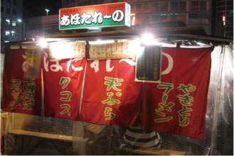
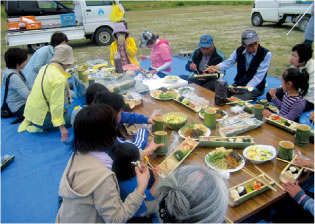

福岡の代表的な食文化のひとつである、「屋台」を楽しめるチケットです。「屋台に行きたいけれどどこが美味しいかわからない」「料金がいくらかかるか心配」「衛生的には不安」といった観光客の方の声にお応えして作った、屋台を安心してお得に楽しめるチケットです。

九州新幹線開業に合わせ、筑後船小屋駅・大牟田駅の新駅２駅を中心に、地元の様々な魅力を体験できる着地型プログラムを企画・実施しました。地元酒蔵をめぐるバスツアーをはじめとして、炭鉱や自然、温泉を楽しめる様々なプログラムで人気を集めました。
